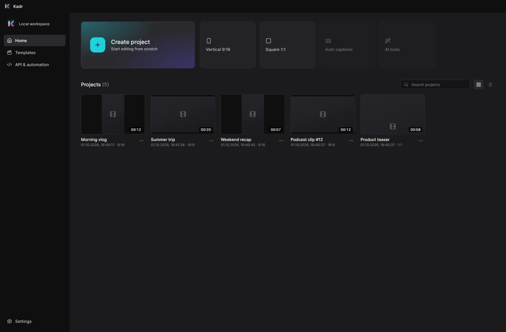
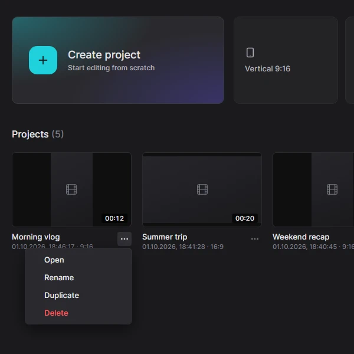
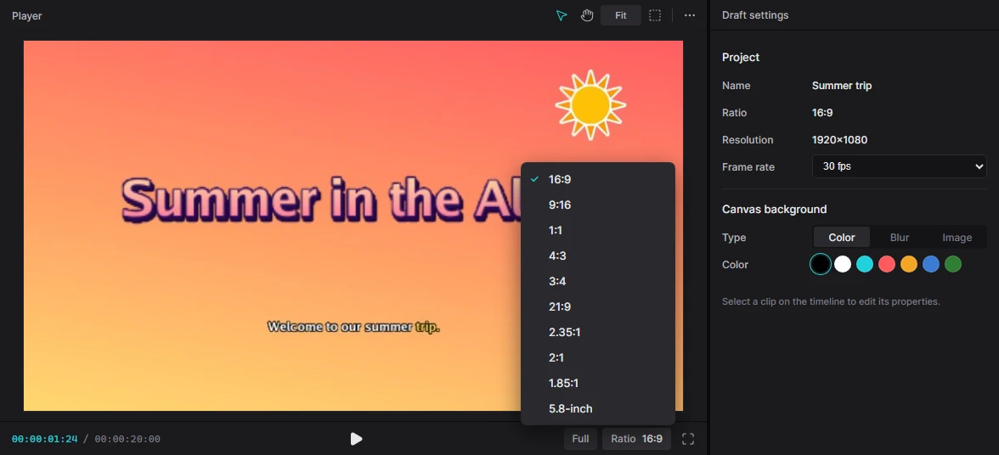
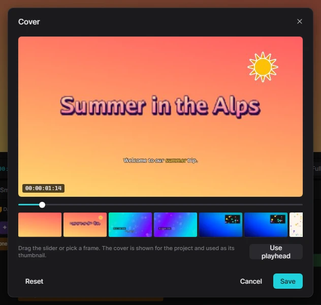

For humansStart3 min read
Projects
A project is one video you are working on. Kadr keeps all your projects on the home screen and saves every change the moment you make it.
The home screen
Kadr opens on the home screen. To get back to it from the editor, click the ← arrow in the top bar or choose Menu → Back to home.

- Create project — a new 16:9 video (1920×1080, 30 frames per second). Shortcut: Ctrl+N, which also works inside the editor.
- Vertical 9:16 — for TikTok, Reels and Shorts (1080×1920).
- Square 1:1 — for square posts (1080×1080).
- Search projects — type part of a name. The two buttons next to it switch between a grid and a list.
- Settings (bottom left) — updates, FFmpeg and more; see Settings & updates.
A new project is named after today's date (for example 1001 on 1 October). Give it a proper name by clicking the name in the editor's top bar.
The Auto captions and AI tools buttons on the home screen and the Templates section are placeholders for a later version. The same features are already available inside the editor: see Captions and AI tools.
Open, rename, duplicate, delete
Click a project's picture (or double-click the card) to open it. For everything else, click the … button under the card:
- Open
- Rename — type the new name and press Enter.
- Duplicate — makes an independent copy, handy for trying out a different version.
- Delete — asks for confirmation first.

Deleting a project cannot be undone. Kadr removes the project itself, but your original video, photo and music files stay where they are on your disk. If you only want to try something risky, duplicate the project first.
Video shape (ratio)
You can change the shape of your video at any time with the Ratio button below the player. Kadr offers 16:9, 9:16, 1:1, 4:3, 3:4, 21:9, 2.35:1, 2:1, 1.85:1 and 5.8-inch (a tall phone screen).

When the shape changes, every clip is fitted into the new frame and any empty area is filled with the canvas background (see below). Titles and stickers keep their place relative to the frame, so check them after switching. To turn a landscape video into a vertical one that follows the subject automatically, use Auto reframe.
Frame rate and background
Click an empty part of the timeline so that nothing is selected. The inspector on the right then shows Draft settings:
- Frame rate — 24, 25, 30, 50 or 60 fps. 30 fps suits most social videos; use 25 fps if your camera records PAL video, 60 fps for smooth gaming or sports footage.
- Canvas background — what shows where no clip covers the frame: a Color (pick one of the swatches) or a Blur — a blurred, enlarged copy of the video itself, popular for vertical videos made from landscape footage.
Each clip on the main track can override this: select the clip, open Video → Basic and scroll to Canvas. There you can choose None (use the project setting), Color, Blur (four strengths) or Image (type the full path of a picture), and use Apply to all to give every main-track clip the same background.
Cover image
The cover is the frame used as the project's thumbnail. Click Cover at the start of the main track, drag the slider or pick one of the frames, then click Save. Use playhead takes the frame under the playhead; Reset goes back to the first frame.

Saving and where projects live
There is no Save button: Kadr saves after every single change, and Ctrl+Z / Ctrl+Shift+Z undo and redo. Projects are stored in your Windows profile, in %APPDATA%\Kadr\projects (one folder per project). A project contains only links to your media files, not copies — so keep your original files where they are. If you do move them, Kadr shows them as missing and lets you relink them.
Back up a project by copying its folder from %APPDATA%\Kadr\projects together with your media files. To see the exact data folder (it is different in portable mode), open Settings → About → Data folder.